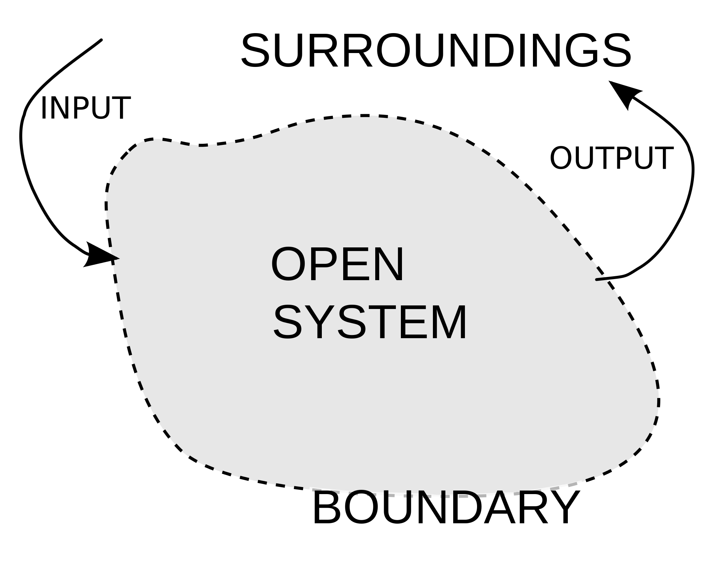

Thermodynamics is the branch of science dealing with topics such as heat, energy, and temperature. In this section, we'll be defining several of these terms and giving relationships between them. Since a lot of these concepts will be new to you, you'll most likely find yourself confused or reading sentences over multiple times. Don't worry, this is completely normal when it comes to thermodynamics. For this section, I recommend a quick read through to become familiar with the basic concepts, before going back and re-reading with the intent of understanding.
The First Law of Thermodynamics states that the energy of an isolated system is always conserved. This is one of the most powerful statements in all science and is often stated as the conservation of energy.
Imagine you had a sealed box with really thick, infinitely dense walls. Inside the box is some stuff. Since the walls are infinitely dense and thick, whatever's inside the box stays inside the box forever unless the walls are made permaeable, even if the stuff is as small as a single molecule of water.
This is analogous to the conservation of energy. With conservation of energy, instead of a box, we have an isolated system. Instead of stuff, we have energy. In any closed, isolated system (think a system that only exists by itself and doesn't interact with the outside, such as the inside of a thermos or a really padded box), the energy in the system will always be the same. Since the universe itself is considered an isolated system (there is nothing outside of the universe that it can interact with), we can say that the energy of the universe is conserved.
Some of this probably seems abstract. Don't worry, we're going to define everything in this post. Questions such as "What is the system?" and "What is energy?" are going to be explained in more detail. For now, just keep the conservation of energy in the back of your mind.
In the previous section, we made use of the word "system." What exactly is a system? What does it mean to be isolated?
In thermodynamics, the system is the part of the universe being examined. If we're analyzing the gas inside a balloon, the gas in the balloon is the system. If we're trying to determine the properties of your room, your room is the system. Whenever you're trying to determine the system, simply ask yourself what it is that you're looking at. The system should be the logical answer to that question.
A system is said to be open (see right) if it exchanges energy and matter with its surroundings.

Another way of saying this is that there's an input and an output to the system: things can go in and come out.
An example is a glass of water: you can add things to the water and drink the water in order to add/remove matter, or you can heat up and cool down the water to input/remove energy.
An isolated system (see below) is one that exchanges neither energy nor matter with its surroundings. Nothing goes in and nothing comes out. In a way, we can visualized isolated systems as systems that don't interact with the surroundings. This isn't true seeing as there's interaction via. pressure and other external forces, but it helps to visualize an isolated system as such.
These only exist in theory, but are used to model real-world systems and simplify calculations.
For example, we can consider a perfect thermos as an isolated system. In the real world, the contents of a thermos will decrease in temperature over time, but ideally the contents would remain at the same temperature and thus energy forever. Since there is no matter exchange, we can visualize this as an isolated system.
On the other hand, the surroundings is defined as anything that's not the system. In both cases, the surroundings is the rest of the universe. We can therefore make this statement:
System + Surroundings = Universe
You may be asked to perform thermodynamics analysis on a chemical reaction. For chemical reactions, the system is the molecules taking place in the chemical reaction, and the surroundings is the rest of the universe.
We can sum up this section through the following statements:
The system is whatever's being examined.
The surroundings is everything outside of the system.
An isolated system can be imagined as one that does not interact with its surroundings.
Heat is somewhat of a weird thing to think about. We've all heard of heat, but how can we define heat? To answer this, we'll use James Maxwell's four stipulations for the definition of heat:
1. Heat can be transferred from one body to another.
2. Heat can be measured.
3. Heat is not a material substance.
4. Heat is a form of energy.
You likely have some idea of what heat of. It's a difficult thing to describe, but you know some of its properties already. For example, when two objects of different temperature are placed together, heat flows from the hotter object to the cooler.
Heat and temperature are not the same thing! The two are related and certainly behave similarly though. Heat is a kind of energy which is in units of Joules (J). Temperature is the average molecular motion in an object, measured in Kelvins (K). This leads to some really interesting, unintuitive behavior that we'll explore in later courses.
When we talk about the heat of a system, we're talking about the change in heat. In other words, we cannot say that a system has 500 J of heat because it is not measured in this way. Instead, we can say that a system has a change in heat of 500 J.
When a system loses heat through some process, the process is said to be exothermic. This is denoted as `-q` , where `q` is the quantity of heat in Joules. The negative is there to indicate that the system is losing energy in the form of heat. Conversely, if a process causes the system to gain heat, the process is said to be endothermic and is denoted as `+q`.
Consider this: you have an isolated system consisting of two boxes, one at `T_(hot)` and the other at `T_(cold).` The box at `T_(hot)` is warmer than the one at `T_(cold)`. What will happen when we bring the two boxes in contact?
From experiencing similar behavior in everyday life, we know that the heat will flow from the warmer box to the colder box until the two are the same temperature. The change in heat for the box at `T_(hot)` is `-q`, since the box is losing heat. The change in heat for the other box must be `+q`, since the 1st law states that all energy in an isolated system is conserved. All the energy lost by the `T_(hot)` box must be gained by the `T_(cold)` box.
Just like heat was a form of energy, work is another form of energy and is also in units of Joules (J). Work can be thought of as the change in energy due to changes in volume. The formula for the work of a system is the following:
Work = `-PDeltaV`
Where P = pressure in units of atmospheres (atm) and `DeltaV`= change in volume, in liters (L)
Notice that the units of `PDeltaV` comes out to `L*"atm"` whereas earlier we said that work was in units of Joules. This is because `L*"atm"` is another unit of energy. The conversion factor between `L*"atm"` and J is `(101.3 J)/(L*"atm")`.
Consider a balloon that is expanding at a constant pressure of 1 atm. If the balloon increases in volume from 1 L to 3 L, we can calculate the work done by the balloon:
`W = -PDeltaV = -(1 "atm")(3L-1L) = 2 L*"atm"`
`(2 L*"atm")((101.3 J)/(L*"atm")) = -202.6 J`
The reason that the work term has a negative sign is that the system is losing energy if it expands. In general, when a system expands, it uses energy to expand against the surroundings, therefore the work term is negative. When a system contracts, the `DeltaV` term becomes negative and work becomes a positive term.
Now that we've defined the key terms, we can revisit the first law. In mathematical form, the first law can be written as:
`DeltaU=q+w`
Where `DeltaU` is the change in energy of the system, `q` is the change in heat, and `w` is the work done by the system.
Since both `q` and `w` are in units of J, the total change in energy (`DeltaU`) must also be in units of J.
Recall that the first law says that the energy (`U`) of an isolated system is conserved. This means that the change in energy, (`DeltaU`), is equal to 0 for any isolated system. For any non-isolated system, `DeltaU` will not be equal to 0. We'll illustrate this with a problem.
#1. A balloon under a constant pressure of `3 "atm"` expands by 3 L and absorbs `500 J` of heat. What is the total change in energy for the system?
The first step in any of these problems is identifying the system. Since we're analyzing the energy of the balloon, we can define the system as the balloon. The balloon is a non-isolated system seeing as it is absorbing heat from its surroundings and doing work via, expansion.
Using the 1st law, `DeltaU = q+w`, we just need to calculate q and w for the balloon.
`w = -PDeltaV = -(3 "atm")(3 L)= -9 L*"atm"=-912 J`
Since the heat is absorbed, we know that the `q` term is positive. `q = 500 J`
`DeltaU = (500 J) + (-912 J) = -412 J`
Answer : `-412 J`
The balloon is actually losing energy in this process!
The 1st Law of Thermodynamics states that the energy in an isolated system is always conserved.
The system is whatever's being analyzed. The surroundings is everything else.
An isolated system is one that doesn't exchange energy or matter with its surroundings.
The SI unit of energy is the Joule (J)
Heat (`q`) is a form of energy that can be transferred between systems. Only changes in heat can be examined.
Work (`w`) is a form of energy that is due to changes in volume.
Mathematically, the first law can be written as `DeltaU = q+w`.